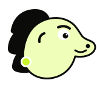
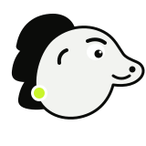
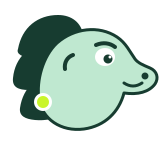
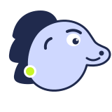

SELECTED
GoalGuard · Selected mascot colour study
Electric lime now leads the production mascot. The three-scale silhouette, calm expression system, and state-specific postures provide the differentiation while preserving GoalGuard’s established palette.
Electric Lime uses GoalGuard’s defining accent for Pip’s body, near-black armour on light surfaces, and reversed white armour on dark surfaces.
PRODUCTION SELECTION



Electric-lime body, near-black armour and features, and white facial contrast. The outline keeps the silhouette readable on white.
Use white armour with the same electric-lime body. Keep facial features near-black so the expression remains stable.
Use the black-only mark or micro-mark. Do not compete with the background by adding another mascot colour treatment.